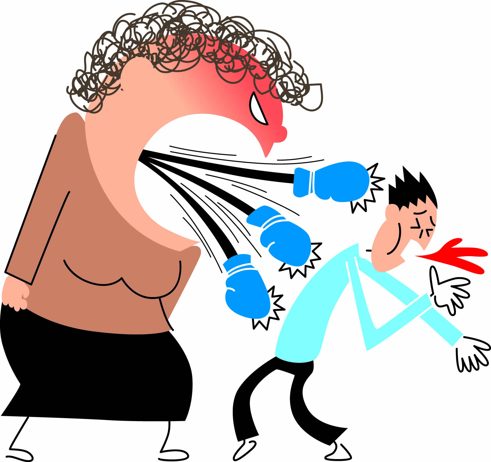

|
| What is verbal violence? |
| Verbal abuse occurs when one person criticizes or insults another person. It is a destructive form of communication intended to damage the other person's self-concept and produce negative emotions. |  |
| Consequences of verbal violence |
| You might have a poor support network. Consequences in school life: Demotivation, lack of interest and lack of attention in classes, poor academic performance, school dropout, may present rejection towards their educational center. |  |
| Types of verbal violence |
|  | Block, Deflect, Accuse, Blame, Judge, Criticize, Trivialize, Undermine, Threaten, Insult, Forget, Order, Deny, Act in anger, Verbal abuse, Domestic violence. |
| How to avoid verbal violence? |
| Assertive communication and, in general, communication skills reduce the risk of conflict and verbal violence. Self-esteem, empathy, concern for others or the ability to manage conflicts constructively contribute to reducing the risk of verbal violence. |  |
| Video of verbal violence |
|